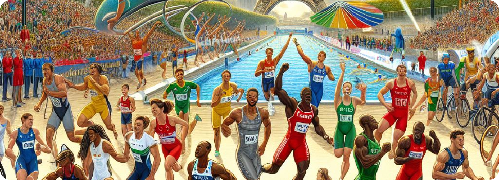

Grands moments des JO
Les Jeux Olympiques de Paris 2024 ont été marqués par des moments mémorables, comme la cérémonie d'ouverture éblouissante, la victoire de l'équipe de France de handball, et le record du monde du 100 mètres battu par une sprinteuse américaine. Ces Jeux ont également illustré l'esprit de solidarité et de fair-play, notamment avec le marathonien éthiopien aidant son concurrent kenyan à franchir la ligne d'arrivée.